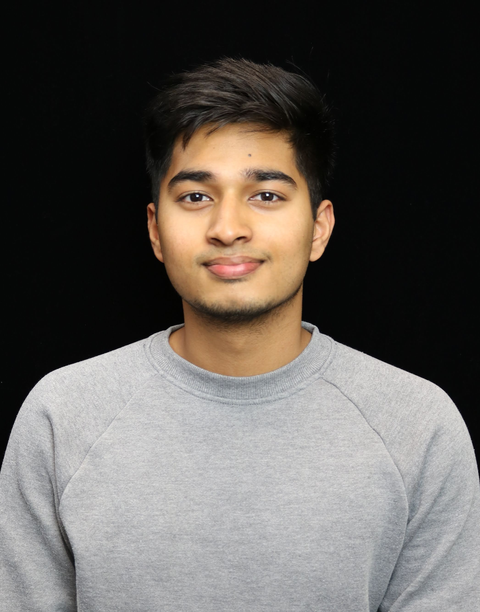

About Me
I received my Bachelor's degree in Electrical Engineering and Computer Science from Czech Technical University Prague in 2020 after successfully defending my Thesis, "Design of an Electromagnetic Gripper for Unmanned Aerial Vehicles," at Multi-Robot Systems under Dr. Martin Saska.
I am finishing my M.Sc. Robotics at Technische Universität Dortmund and working on my Master's Thesis topic, "A Monocular Vision Architecture for Fill Estimation in Shipping Containers," with the Robotics and Cognitive Systems team at Fraunhofer IML.
My expertise lies in Computer Vision Algorithms, Deep Learning, 3D Perception, and SLAM. I also have professional working experience in the logistics and bin-picking industry.
My future interests include Multi-Modal Perception, Neuromorphic Systems, Mobile Robotics, AR/VR Technologies, and Edge Computing.
You can contact me via Email, LinkedIn, or Google Scholar.
Research Interests
I focus on computer vision, deep learning, and autonomous mobile robots, emphasizing building intelligent and adaptive systems. I am currently a Research Associate at Fraunhofer IML working on Single-View 3D Reconstruction for Application in Logistics.My research revolves around 3D Perception and Egocentric Perception.
Projects
- Monocular Vision Architecture for Container Smart Logistics - Ongoing
- Anomaly Detection in Time Series Data for Wire-Cutting Process - June 2024
- Technology-driven Innovative Solutions using Generative AI for BvB - February 2024
- Multi-View SfM for Historic Artifacts - April 2022
- Stereo Reconstruction of Martian Geology - October 2021
- Industrial Bin Picking 3D Perception using Zivid - March 2021
- Grasping mechanism for UAVs MBZIRC 2020 - January 2019
- Lidar Integration for NIFTi - July 2018